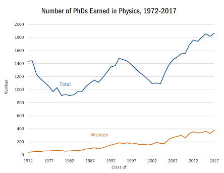

Galois fields, Galois Theory, Galois Modules. All of these mathematical concepts were created by and named after Évariste Galois, a French mathematician born in 1811. But what’s so special about Galois specifically? Most people hear about his mathematical achievements and just categorize him as one of the old famous mathematicians whose namesake is used to describe an equation of some sort.  They might hear about him in a discrete math or abstract algebra course, and maybe they’ll even use one of his discoveries to solve a homework problem, but beyond that they only see him as one out of a plethora of historical mathematicans, a pigeonhole that most cannot escape from. The fascinating thing about Galois, however, is that he never lived past twenty years old. He pioneered group theory, determined when a polynomial could be solved using radicals (which had been previously unsolved for 350 years), and created the branch of mathematics known as Galois geometry, all when he was practically a teenager.
They might hear about him in a discrete math or abstract algebra course, and maybe they’ll even use one of his discoveries to solve a homework problem, but beyond that they only see him as one out of a plethora of historical mathematicans, a pigeonhole that most cannot escape from. The fascinating thing about Galois, however, is that he never lived past twenty years old. He pioneered group theory, determined when a polynomial could be solved using radicals (which had been previously unsolved for 350 years), and created the branch of mathematics known as Galois geometry, all when he was practically a teenager.
Today, meeting those types of standards are unheard of. A teenager discovering a new branch of mathematics or solving a problem that stumped the mathematicians of previous generations seems impossible, let alone discovering concepts that would be taught in classes centuries later. So what happened? Why does it seem like there isn’t anyone as influential as Einstein or Netwon in the modern era?
A few possibilities come to mind.
One being that people are still discovering and innovating at the same rate, but it takes a long time for these innovations and discoveries to become well known, making it seem like there are less of them happening. So perhaps there does exist a modern day Galois, Euler or Pythagoras, but their discoveries just haven’t hit the mainstream yet. This idea would make sense if the pattern was recurrent throughout history, but we know that a lot of intellectual celebrities like Einstein and Aristotle were praised for their contributions to their respective fields while they were alive1. Granted, many didn’t, but a majority of the most influential thinkers of the past had been recognized in their life time. So its hard to believe that this wouldn’t be the case in today’s era of social media and instant communication, and that someone who made a revolutionary breakthrough in their field would be ignored or remain unknown.
Another possibility is that people in the past were just more innovative than us. To elucidate upon the idea of innovativeness some more, it essentially boils down to three main attributes, intelligence, knowledge, and effort. Since innovation is pretty much a function of these three things, examining them under a closer lens should yield some insight into innovativeness as a whole and why it may have declined recently.
People clearly have more knowledge now than they did in the past; almost everyone in the world now has access to an infinitely large aggregation of all of previously discovered information. So knowledge can’t be the issue.
Effort, on the surface, might seem like it could be the problem. It is feasible that most people today don’t work as hard as people in the past, considering that we are now more comfortable and have more free time. And while this is true1, the total amount of concentrated effort we are focusing into innovation is actually much higher than it used to be. Our population has grown exponentially, more people are seeking higher education2, and we have many institutions dedicated to research and innovation in their respective fields3. Aristotle didn’t have a network of thousands of people around the globe, all dedicated to solving the same problem as him. The only help he got was from the small, proximity determined community he belonged to. So its unlikely that effort would be the problem when we have so many more people working together right now.
A counter-argument to this point would be that trends regarding how many people choose their professions are changing. Perhaps people today are less inclined to go into physics than people in the past, which could be the reason for declining innovation in that field. But again, it seems unlikely given the exponential nature of the our population growth. Using the Mathematics Geneology Project’s database of awarded mathematics PHDs, it can be observed that from 2010 to 2015 (inclusive) there were 41,652 mathematics PhDs awarded, while there were only 30,859 mathematics PhDs awarded from 1994 to 1999 (inclusive). Even in this extremely short amount of time, the difference is noticeable. The American Institute of Physics also provides some info in the form of a graph, showing that there is a general positive trend, and that there is not a permanent decline in the number of Physics PhDs awarded over time. The evidence indicates that effort is not the issue.
This leaves intelligence. People are generally educated to a much higher degree now than in the past, so if our intelligence was really declining, then it would be linked to innate cognitive ability (This is assuming that our current education system is better than it was in the past). While humans don’t really have any pressing selectionary pressures right now, intelligence still has a primal link with evolutionary fitness, so it wouldn’t make sense for natural selection to be making us less intelligent. Based on all of these factors, it doesn’t seem like the people of the past would have some sort of special advantage over us in terms of innovative ability, and in fact, the opposite is more likely.
The final possibility is that innovation is becoming harder. If we are better at innovating, and innovation is actually declining, then innovation itself must be getting more difficult. Intuitively, this makes sense. Math theorems are getting harder to discover because the people of the past have already discovered so many. A prime example of this is Pythagoras. Many mathematicians can prove the pythagorean theorem; the only reason Pythagoras got the credit is because he had a head start. And it doesn’t seem feasible to think that if Pythagoras hadn’t been born, his theorem would never have been discovered*, which further points towards the idea that innovation is actually more correlated with time than with random bursts of luck or skill in specific people. As time goes on, more and more breakthroughs and innovations are made, and the list of them that remain undiscovered gets shorter and shorter, making them harder to find. We can observe this trend through the increasing complexity of famous discoveries.
What does this mean? Because innovation of the revolutionary caliber is decreasing, we can extrapolate through the same reasoning that innovation of all kinds are decreasing in the same way. Examples of other, smaller types of innovation could be finding a better way for your company to organize files, or finding a faster route for cars to take from one point to another. Things that certainly aren’t groundbreaking, but still have an impact on others. And once we reach that point where innovation stops happening, our society will look vastly different. People will be essentially interchangeable as noone will be able to create change.